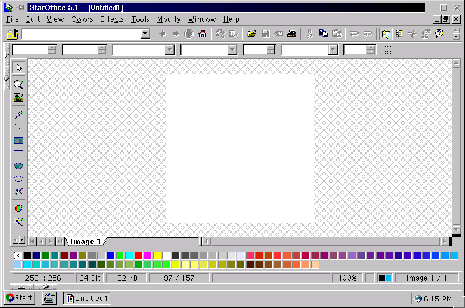

Next:
Crear
Up:
StarOffice
Previous:
StarChart: Generador de gráficas
Índice General
StarImage: Editor de Imágenes
Figura 5.45:
Retocador de imágenes del starOffice

Subsecciones
Crear
Nueva imagen
La ventana de Image
La ventana principal
Cambio de dimensiones
Escala
Manejo de archivos
Dibujar
Herramientas de dibujo
Los colores
Pluma
Líneas
Rectángulos y elipses
Aerógrafo
Reflejos
Rotaciones
Recortar
Modificar
Selección
Invertir
Brillo y contraste
Valores RGB
Color
Filtros
Proyecto Cursos - LuCAS - http://lucas.hispalinux.es/htmls/cursos.html